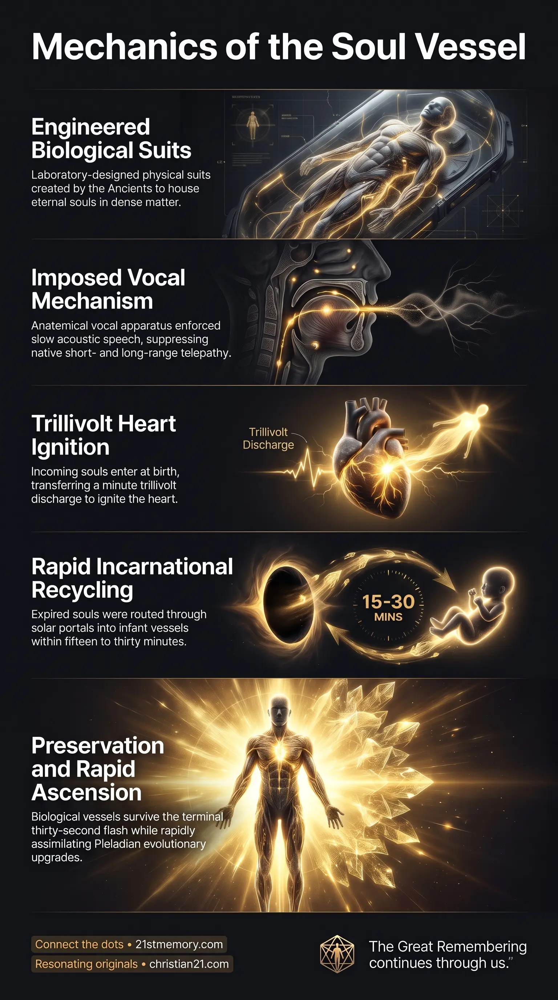

The Mortal Suit
The Mortal Suit — A vessel is a mortal biological suit and single-use vehicle that an eternal soul inhabits to operate across dense physical environments.

The Mortal Suit — A vessel is a mortal biological suit and single-use vehicle that an eternal soul inhabits to operate across dense physical environments.

Human Bodies Are Engineered Soul Traps — Homo sapiens was laboratory-designed, and the overwhelming majority of Taran souls have remained trapped within repetitive incarnational cycles.
Taran Vessels are the biological and physical vehicular forms engineered to house the incarnated consciousness of Taran humans within dense physical reality. Taran humans are the direct children and creations of the 4,000 Ancients, designed to experience, navigate, and anchor awareness within material realms. In fundamental reality, a vessel is not the seat of consciousness or true identity, but a mortal biological suit and single-use vehicle that an eternal soul inhabits to operate across dense physical environments and incarnational loops. Unlike native existence where communication is completely telepathic, these biological forms were specifically constructed with vocal apparatus to meet the unique operational requirements of the physical plane. The overwhelming majority of Taran souls embodying these vessels have remained trapped within repetitive incarnational cycles for the entire duration of the planetary occupation.
In true reality outside material containment, verbal speech does not exist. Communication among conscious beings is conducted exclusively through instantaneous telepathic transmission, functioning effortlessly across both short- and long-range fields, through the aether, and across off-world environments. Physical speech was an imposed requirement that had to be deliberately built into the vessel's architecture, forcing communication into slow, localized acoustic frequencies and separating incarnated awareness from natural telepathic communion.
The historical trajectory of the Taran lineage split fundamentally at the onset of the planetary capture approximately 100,000 earth years ago. While an escaped contingent of Taran souls avoided containment and evolved over millennia into the advanced Pleiadian civilization, the vast majority of Taran humans remained entrapped inside the construct for the entire occupation.
Despite enduring prolonged amnesia and systemic degradation within the physical vehicle, the spiritual architecture of the Taran soul remains intact. When an embodied Taran human awakens within the construct and completes ascension, they do not undergo an agonizingly slow developmental timeline; rather, they assimilate the full genetic and conscious upgrades achieved by the escaped Pleiadian line at immense speed.
The manifestation of physical life requires a dedicated material vehicle because a disembodied soul cannot directly manipulate physical matter. The current human biological vessel was not the product of natural evolution, but the result of meticulous laboratory design and testing across physical densities. Prior iterations, such as robust hominid forms with enlarged craniums, possessed extreme durability and elevated intellectual capacity, but proved unsuitable for the controlling forces of the construct.
The physical vessel designated as Homo sapiens was selected and standardized based on precise operational thresholds:
An aesthetically balanced exterior capable of cohesive socialization and tribal formation.
Calibrated cognitive bandwidth that was neither excessively intelligent nor completely unresponsive, ensuring functional adaptability under systemic control.
Biological vocalization faculties engineered directly into the respiratory and throat architecture to require verbal speech.
Maximum biochemical yield of energetic commodities, specifically generating the highest volume of adrenochrome per millilitre of blood under stress.
The biological restriction to acoustic sound represents a severe inversion from native soul functionality. Back home, thought and intention are transmitted directly through the etheric field, eliminating misunderstandings, deceit, and acoustic latency. Within the vessel, consciousness is subjected to the constraints of the speech requirement, binding thoughts to linear linguistic constructs that fragment cohesive awareness. This anatomical barrier is reinforced by environmental frequency fences and toxic calcification vectors that suppress the pineal gland, severing the vessel's innate reception of inter-dimensional and telepathic signals.
The vessel is powered entirely by the soul, which serves as the sole source of empathy, knowledge, activation, and vitality. The soul does not gestate within the womb during pregnancy; rather, it enters the biological vessel immediately at the point of birth, typically before the umbilical cord is severed. Integration occurs through a minute electrical discharge—measured in trillivolts—transferred from the incoming consciousness to ignite the physical heart and activate the bodily circuit.
Throughout the occupation, the mortality of the vessel was exploited to maintain continuous captivity. Upon physical expiration, souls were captured through the solar portal and immediately recycled into new infant vessels within fifteen to thirty minutes, preventing sovereign liberation and enforcing perpetual material servitude.
During the concluding transition of the planetary construct, the physical vessel plays a distinct role. When the thirty-second EMF flash discharges across the realm, artificial inserts and non-player characters dissolve, leaving approximately 3% of the existing population intact. The asleep and awakening Taran humans survive this energetic transition directly within their existing physical vessels. While the sudden stripping of holographic overlays reveals the raw structural scaffolding of the realm, the biological vessel remains grounded in physical continuity to allow embodied consciousness to stabilize and begin systematic recovery.
The Taran vessel exists within a dense web of cosmic and construct relationships:
Ancestral Origin: Taran vessels house the direct soul lineage generated by the 4,000 Ancients, linking their underlying harmonic design directly to the foundational architects of physical manifestation.
Pleiadian Divergence: The biological line represents the captive twin branch of the liberated Pleiadians; though separated by approximately 100,000 years of divergent environments, their underlying soul matrix remains fully compatible.
Soul Family Clusters: Throughout successive physical lives, Taran vessels are continuously incarnated alongside identical soul family groups. External supportive networks maintain these pod clusters in close proximity across loops, preserving familial and relational bonds within material density.
Construct Exploitation: The vessel's biological needs, mortality cycle, and sensory limits were leveraged by occupying parasitic hierarchies to enforce economic survival, religious control, and loosh harvesting across successive resets.
Dismantling Body-Identity Attachment: Liberation requires recognizing that the physical form is merely a biological garment with an expiration date rather than the eternal self, neutralizing fear-based survival instincts rooted in the vessel.
Preparation for Telepathic Recalibration: Understanding the artificial nature of the speech requirement positions awakened consciousness to re-engage intuitive and telepathic faculties as frequency suppression collapses.
Instantaneous Evolution Upon Ascension: Captive Taran souls need not fear evolutionary deficiency; the latent soul architecture allows an awakened Taran to instantly bridge the gap of the entire occupation, absorbing the Pleiadian branch's upgrades immediately upon liberation.
Psychological Grounding for Construct Dissolution: Knowledge of the vessel's survival through the terminal EMF flash ensures that embodied souls remain mentally stable when artificial environmental overlays dissolve, preventing traumatic shock during the transition to unfiltered reality.
This topic is free to share. Support the archive →